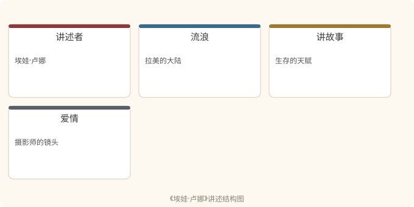

埃娃·卢娜
一、基本信息
| 作者 | 阿连德 |
|---|---|
| 成书/出版 | 1987年（作者页 B158 口径：埃娃·卢娜（1987）） Isabel Allende — Encyclopaedia Britannica（百科全书） |
| 国别/地区 | 智利 |
| 时代 | 现当代 · 20世纪 |
| 体裁 | 长篇小说 |
| 语言 | 西班牙语 |

《埃娃·卢娜》讲述结构图（主题·结构图）
二、创作背景
作者页（B158）：阿连德 major_works 载'埃娃·卢娜（1987）、城市野兽（1990）'（B158 作者页定位，详见 youlingzhijia 条核对）。
题材（通说待核）：会讲故事的埃娃·卢娜——拉美大陆的流浪与讲述。
三、内容脉络
埃娃的出身与讲述天赋——'讲故事的人'（通说待核）。
四、主要人物表
| 人物 | 身份 | 说明 |
|---|---|---|
| 埃娃·卢娜 | 讲述者 | （通说待核） |
| 鲁尔夫·卡莱 | 摄影师 | （通说待核） |
五、主题与艺术特点
- 讲述即生存（通说）。
- 拉美百年群像（通说待核）。
- 女性讲述者的谱系（通说）。
六、影响与评论
- 作者页：阿连德代表作谱系（B158 作者页口径）。
Isabel Allende — Encyclopaedia Britannica（百科全书） - 作者页：阿连德'幽灵之家'作者定位（B158 作者级）。
Isabel Allende — Encyclopaedia Britannica（百科全书）
七、阅读建议
难点
- 拉美魔幻的密度。
- 讲述的嵌套。
- 《埃娃·卢娜》（译林出版社，通说待核）。
- 西班牙文原版。
先《幽灵之家》后本作。
八、待核实
- 1987年出版（HarperCollins西语说）核对。
- 埃娃·卢娜/鲁尔夫人名核对。
- 姊妹篇《爱心故事》待核。
本页主要来源
阿连德的其他收录作品：幽灵之家